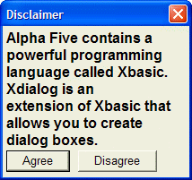

{FONT}
Syntax
{FONT= Font_Name, Point_Size [, Style ] }
 Note : You must not have any space characters in the finished command.
Note : You must not have any space characters in the finished command.
|
Argument |
Type |
Description |
|
{font= } |
C |
The leading {font= and trailing } characters are required. |
|
Font_Name |
C |
The name of an installed type face. Case insensitive. |
|
Point_Size |
N |
An integer value. Note that, unlike True Type and Postscript fonts, some built-in Windows fonts do not support all point sizes. |
|
Style |
C |
Optional. Default = "" (normal)
You may combine attributes, as in "bi" = bold italic. |
Description
The {FONT} command defines the font, point size, and style. One or more {font=font_specification} statements may appear inside the Format section of a UI_DLG_BOX() function.
Limitations
Desktop applications only
Example
|
ui_dlg_box("Disclaimer",<<%dlg% {wrap=40} {font= arial, 12, b } Alpha Anywhere contains a powerful programming language called Xbasic. Xdialog is an extension of Xbasic that allows you to create dialog boxes.; {font=Arial,10} <&Agree> <&Disagree> %dlg%) |

See Also